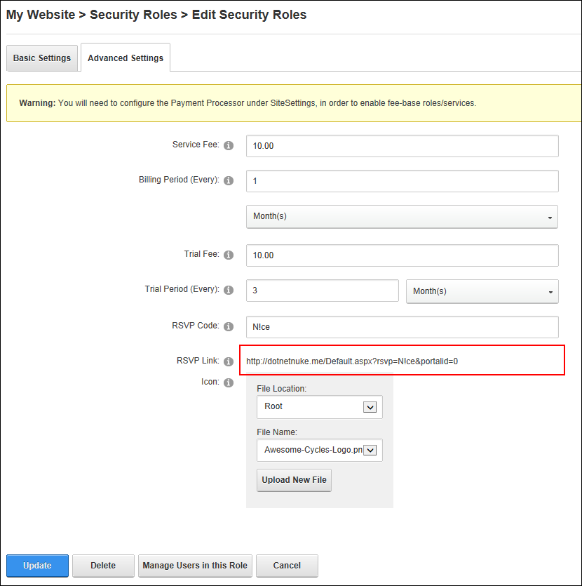

Obtaining an RSVP Link
How to obtain an RSVP link using the Security Roles module. Once you have created a security role with an RSVP Code an RSVP Link will be generated for that role. Users can subscribe to the role simply by clicking on the link or going to the URL.
- Navigate to Admin >
 Security Roles - OR - Go to a Security Roles module.
Security Roles - OR - Go to a Security Roles module.
- If the required role is not displayed, at Filter By Role Group select the [Role Group Name] associated with the role, or select [All Roles]< All >.
- Click the Edit
 button beside the required role.
button beside the required role.
- Select the Advanced Settings tab.
- At RSVP Link, copy the link.

Related Topics:
-
See "Subscribing to a Service with an RSVP Code"
-
See "Subscribing to a Service with an RSVP Link"